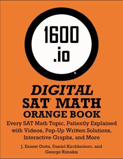

DSRaqamli SAT matematika bo'limi uchun har tomonlama mukammal o'quv qo'llanmasi.
Ushbu kitob raqamli SAT imtihonining matematika qismiga tayyorgarlik ko'rish uchun mo'ljallangan bo'lib, barcha mavzular batafsil tushuntirilgan va misollar keltirilgan. Mualliflar o'quvchilarga murakkab matematik masalalarni oson o'zlashtirishda yordam berishadi. Qo'llanma video tushuntirishlar va interaktiv grafiklar bilan boyitilgan.